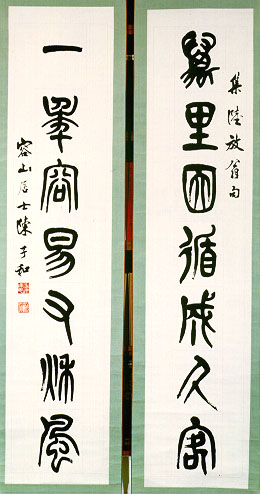

義助慰安婦
—— 李敖百件珍藏義賣藝術品（第20件）
品 名： A20. 陳子和寫陸放翁集句 預估價： 6 萬 成交價： 16 萬 說 明： 本件作品是近代藝術家、出生廣東的陳子和先生所寫的陸游詩集句，對仗非常工整。陸放翁即宋朝大詩人陸游，其詩數量在中國歷史上，居全部詩人的第二位（第一位是乾隆皇帝，數量雖多但多冗濫，且部份作品是臣子代筆）。所謂「集句」即是摘取不同首詩作中的好句子集成對聯。中國歷史上，有三位藝術家皆取名陳子和，除了廣東籍的陳子和之外，尚有明朝福建與現代山東籍的另二位陳子和。
